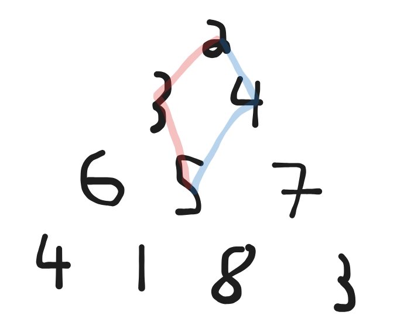
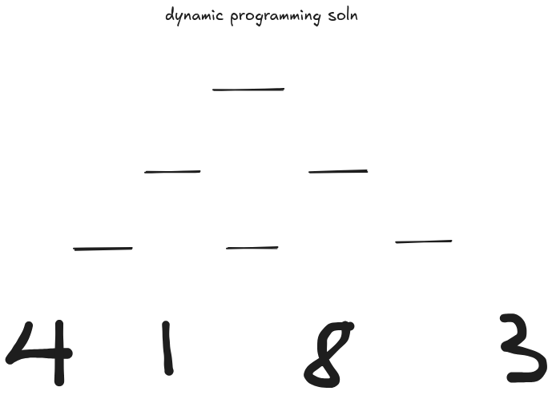
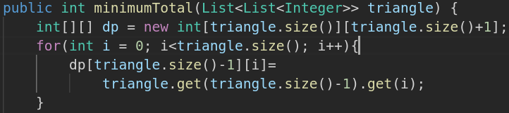
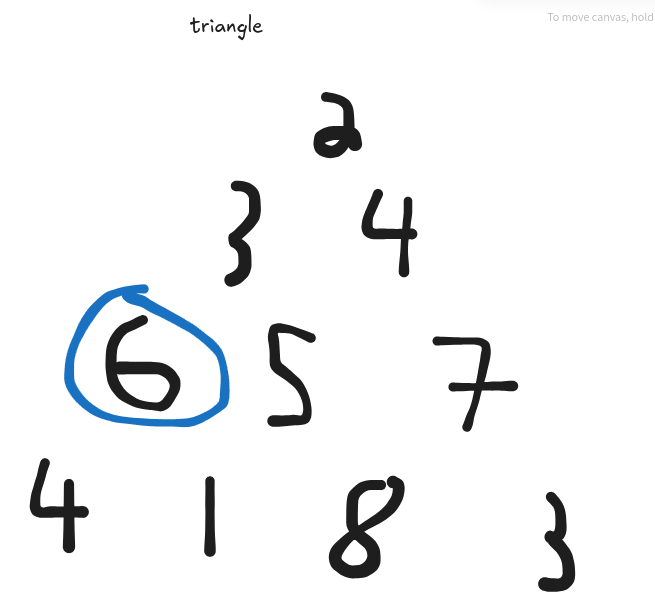
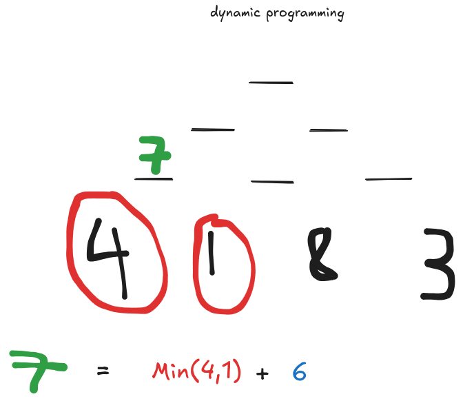
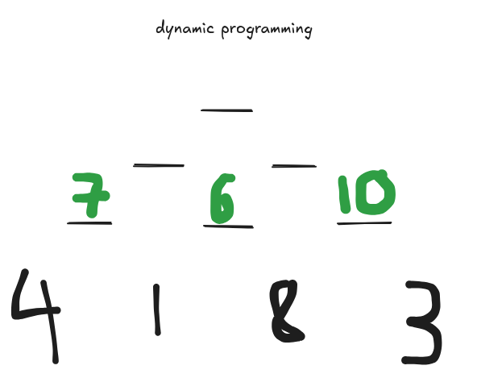
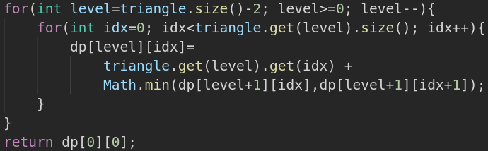
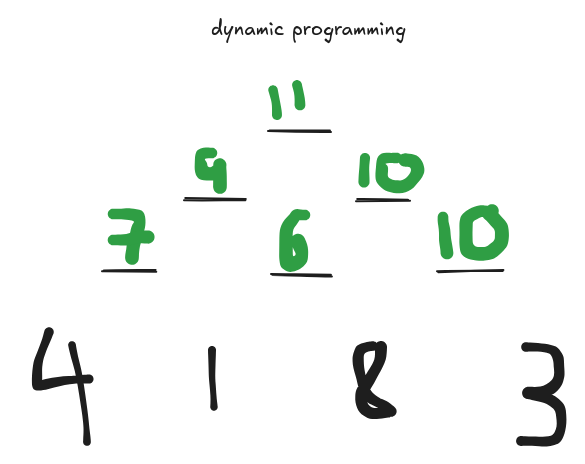

This is a breakdown I've written of the "Triangle" dynamic programming question. After a long summer of prepping, and 3 months of job searching, dynamic programming still hadn't "clicked" for me. I eventually failed a FAANG assessment because I didn't get DP, which got me working on it. I also know for a fact that DP comes up in the processes of other really cool companies, so it's worth knowing if you wanna go through this process!
Dynamic Programming describes the process of solving a complex problem from the bottom up, using the simplest subproblems to construct answers to the harder problems. In order to do this, we need 2 properties to hold.
Overlapping Subproblems: Put shortly, in any DP problem you will observe that in a brute force solution, you are making visits to the same node repeatedly. See figure 1.

In figure 1 you can observe that multiple calculated path sums run through the value of 5. This means that when a brute force solution is executed, we will calculate the path sum 2->3->5->... but we will also calculate the sum 2->4->5->... the problem scales to up to 200 levels in our triangle, this inefficiency is unacceptable. But can we improve on the brute force DFS?
Optimal Substructure is a bit harder for me personally, to identify. Essentially, if you break up the problem in some way, can you use the subproblems which result to put together greater solutions? This is, of course, true of a path sum. But it's also true of some really exotic use cases, where you might not expect to find it. This is why DP is difficult! (imo)
So ok, we've identified overlapping subproblems, I've asserted that this is an optimal substructure, and introduced the "bottom up" principle, building from the simplest answers. The next step is to understand the recurrence relationship. The recurrence relationship describes the relationship between a subproblem we would like to solve, and its children. Thankfully, Triangle spells out the recurrence relationship for us!
"if you are on index i on the current row, you may move to either index i or index i + 1 on the next row"
Put more formally: dp[level][index] = Math.min(dp[level+1][index],dp[level+1][index+1])+triangle[level][index]
I should add that when we start programming, dp[level][index] will describe the solution to the subproblem we are looking at on a given index and level. We can start by solving on the bottom level, remember, dp is bottom up! This is trivial, as the path sum at the bottom of the triangle would just be the value itself!

So in the formal recurrence relationship we are able to ignore level+1, since there is no additional level.

Next, lets calculate a non trivial answer, at level 2, index 0.


So, at dp[2][0], we find the min at level 3, indicies 0,1, that's values 4 and 1, the lesser of the two is, of course, 1. We add the value we see in the given triangle, at [2][0], and get 1+6, so, 7. Tremendous. Let's repeat this process, filling out the rest of the level.
dp[2][1]=min(dp[3][1],dp[3][2])+triangle[2][1] dp[2][1]=min(1,8)+5 dp[2][1]=1+5=6 dp[2][2]=min(dp[3][2],dp[3][3])+triangle[2][2] dp[2][2]=min(8,3)+7 dp[2][2]=3+7=10


Great. We can continue this process and fill out the relevant cells of our dp array.

Recall that previously we had talked about level 2, index 1, as that value of 5, the exemplary overlapping subproblem that made us need Dynamic Programming in the first place. Previously, we had seen that in a brute force dfs solution we would recalculate the value from this location. Now, we can just do an array lookup!
The last thing I want to address is that the problem we are trying to solve is the overall minimum path sum. Note that from level 0 index 0, we would find the min path sum it had seen, and add the triangle's value of 2 to it. Thus, the value at [level=0][index=0] is our answer!
Where the brute force solution's time complexity is 2^n, the time complexity of the dp solution is n^2. We can further optimize this by noting we only need to see the previous level each time, reducing the space needed.
If this helps, feel free to reach out to me at pdefrancisci57@gmail.com. That goes double if you know someone hiring SEs in New York!
Some other good leetcode dp questions:
Coin Change Can I Win Knight Probability in Chessboard